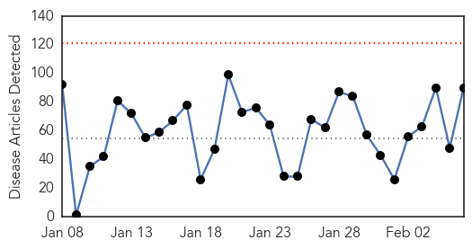
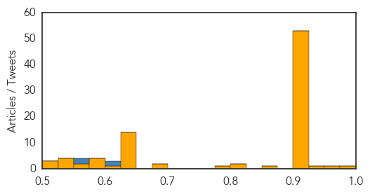
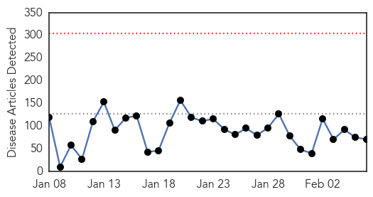
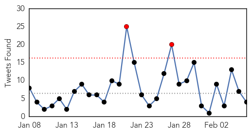
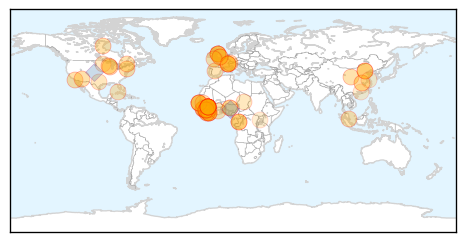
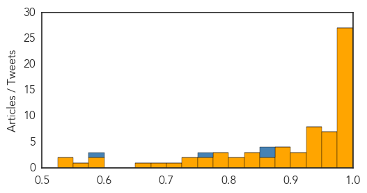

Unknown
30-Day Web Trend
0 alerts, 0 warnings

30-Day Twitter Trend
5 alerts, 0 warnings

Article Locations

Article Confidences
Top Articles:
- 0.994
- Health bosses knew for six months that flu vaccine was defective
- 0.966
- This winter's flu jab gives no protection - Radio Sweden
- 0.930
- Lyme disease costs the U.S. health care system up to $1.3 billion a year
- 0.917
- Chicago Tribune
- 0.917
- Chicago Tribune
- 0.917
- Chicago Tribune
- 0.917
- Chicago Tribune
- 0.917
- Chicago Tribune
- 0.917
- Chicago Tribune
- 0.917
- Chicago Tribune
- 0.917
- Chicago Tribune
- 0.917
- Chicago Tribune
- 0.917
- Chicago Tribune
- 0.917
- Chicago Tribune
- 0.917
- Chicago Tribune
- 0.917
- Chicago Tribune
- 0.917
- Chicago Tribune
- 0.917
- Chicago Tribune
- 0.917
- Chicago Tribune
- 0.917
- Chicago Tribune
- 0.917
- Chicago Tribune
- 0.917
- Chicago Tribune
- 0.917
- Chicago Tribune
- 0.917
- Chicago Tribune
- 0.917
- Chicago Tribune
- 0.917
- Chicago Tribune
- 0.917
- Chicago Tribune
- 0.917
- Chicago Tribune
- 0.917
- Chicago Tribune
- 0.917
- Chicago Tribune
- 0.917
- Chicago Tribune
- 0.917
- Chicago Tribune
- 0.917
- Chicago Tribune
- 0.917
- Chicago Tribune
- 0.917
- Chicago Tribune
- 0.917
- Chicago Tribune
- 0.917
- Chicago Tribune
- 0.917
- Chicago Tribune
- 0.917
- Chicago Tribune
- 0.917
- Chicago Tribune
- 0.917
- Chicago Tribune
- 0.917
- Chicago Tribune
- 0.917
- Chicago Tribune
- 0.917
- Chicago Tribune
- 0.917
- Chicago Tribune
- 0.917
- Chicago Tribune
- 0.917
- Chicago Tribune
- 0.917
- Chicago Tribune
- 0.917
- Chicago Tribune
- 0.917
- Chicago Tribune
Showing top 50 articles...
Top Tweets:
- 0.805
- Flu season: It's taking quite a while for the deep brown (widespread flu activity) to fade from the flu amp http://t.co/iTwoABXwH8
- 0.614
- Ppl w/ heart disease are at high risk for flu complications. Getafluvax to protect & ask doc about antivirals if you get flu redheartchat
- 0.608
- Reminder: 1964 USA epidemic 12.5m rubella cases:killed 11k+ fetuses & 2k newborns infectious disease vaccinations See our recent report
- 0.608
- Flu season: Meanwhile, flu activity seems to be easing in much of Western Canada. Light colors=less flu. http://t.co/KY3BryQTOk
- 0.565
- Reminder: 1964 USA epidemic 12.5m rubella cases:killed 11k+ left deaf, 3k blind, 2k mentally Challanged infectious disease vaccinations
- 0.553
- ¿Qué crees, Jesús se habrá masturbado cuando adolescente pensando en sus amiguitas?... ¿o en sus amiguitos? 🙊
Ebola
30-Day Web Trend
0 alerts, 0 warnings

30-Day Twitter Trend
1 alerts, 0 warnings

Article Locations
Article Confidences
Top Articles:
- 1.000
- Ebola: Modeling a deadly epidemic
- 1.000
- Survivors of Outbreak Now Reporting New PES Syndrome Causing Blindness, Mental Illness
- 1.000
- New Studies Model the Ebola Epidemic
- 1.000
- New studies model a deadly Ebola epidemic
- 0.999
- Ebola threatens economic gains in affected countries
- 0.999
- Senegal reopens land border with Ebola-hit Guinea
- 0.999
- First Major Vaccine Trials In Liberia
- 0.998
- Downward Ebola trend suddenly reverses itself
- 0.998
- Ebola Virus Disease Emergency Appeals (Liberia, Sierra Leone, Guinea, Nigeria, Senegal and Africa Coordination): Combined Ebola Operations Update n°15 - Sierra Leone
- 0.998
- Windsor aid worker en route for Sierra Leone to help stem Ebola spread
- 0.995
- Beijing denies 1st domestic Ebola case - Headlines, features, photo and videos from ecns.cn
- 0.994
- Small rise in new cases shows Ebola hanging on (w/video)
- 0.994
- Health Highlights: Feb. 6, 2015
- 0.993
- Patient being monitored in Madison for Ebola tests negative
- 0.992
- Information Minister Recommends for the Suspension of Chiefs
- 0.991
- Nearly 3,600 children orphaned by Ebola outbreak in West Africa
- 0.990
- Fears over abandoned Ebola orphans allayed: UNICEF
- 0.988
- 'Last mile in fight against Ebola will be the hardest,' says senior UN relief official
- 0.987
- HEALTH: Ebola needle military workers admitted to Royal Free Hospital are ‘no risk’ to public
- 0.987
- Fears over abandoned Ebola orphans allayed
- 0.985
- Isolation unit for ebola cases
- 0.983
- Traveler cleared of Ebola at Madison hospital
- 0.982
- INTERVIEW: Senior UN relief official warns no room for complacency until Ebola is eliminated
- 0.980
- Public Health: Patient negative for Ebola
- 0.977
- UNOPS supporting Ebola recovery phase across West Africa - Sierra Leone
- 0.977
- OFID extends grant to Cuba for Ebola containment in Africa - Sierra Leone
- 0.977
- Nearly 3,600 children orphaned by Ebola outbreak in West Africa - UNICEF -TRFN
- 0.970
- The IMF’s Role in the Ebola Outbreak – The Long-Term Consequences of Structural Adjustment
- 0.967
- Critics Say Ebola Crisis Was WHO's Big Failure. Will Reform Follow?
- 0.966
- China is Ebola-free: Health authority --China Economic Net
- 0.964
- WHO updates clinical practices for Ebola treatment, care - Xinhua
- 0.961
- China is Ebola-free: Health authority - Xinhua
- 0.958
- As travel ban lifted… Ebola infection spikes up in Salone « Awoko Newspaper
- 0.954
- Interview: Senior UN relief official warns no room for complacency until Ebola is eliminated - Sierra Leone
- 0.948
- Ward off the travel bugs, body, Health News, AsiaOne YourHealth
- 0.941
- World Health Organization blamed for ongoing spread of Ebola 05/02/2015
- 0.941
- Critics Say Ebola Crisis Was WHO's Big Failure. Will Reform Follow?
- 0.932
- High rates of child deaths from Ebola, special care needed
- 0.931
- High rates of child deaths from Ebola, special care needed - WHO
- 0.930
- Window for Containing Ebola Outbreak Seen Narrowing
- 0.930
- Royal Navy sailors donate blood to help fight Ebola
- 0.930
- Window for Containing Ebola Outbreak Seen Narrowing
- 0.924
- Dyess Airmen Welcomed Home from West Africa
- 0.923
- World Health Organization Calls For Special Care For Children With Ebola To Address High Mortality Rate
- 0.915
- Secret burials thwarting efforts to stamp out Ebola - U.N
- 0.894
- Ebola vaccines trial backfires as Lawmakers launch investigation
- 0.882
- The IMF and debt worsen the Ebola epidemic
- 0.878
- More than 16,000 children lost parents or caregivers to Ebola—many are taken in by the communities: UNICEF
- 0.876
- EU to meet African leaders to find ways to totally eradicate Ebola
- 0.864
- Guinea's Muslim clerics call for end to FGM to help stop Ebola: TRFN
Showing top 50 articles...
Top Tweets:
- 0.975
- Guinea Ebola infections double as hidden cases discovered - Reuters http://t.co/sc0B9tZqVj ebola EVD
- 0.970
- RT: International donations to the Ebola virus outbreak: too little, too late? http://t.co/in1OcBfCNX Ebola EbolaStory http:/…
- 0.940
- Ebola rises in West Africa, first increase this year - Press Herald http://t.co/KMDWzGwh3t ebola EVD
- 0.923
- Guinea, the ground zero of the Ebola outbreak, now hopes the end is near - Washington Post http://t.co/PkqIc0xzZn ebola EVD
- 0.922
- latest ebola numbers = 22,487 cases and 8,979 deaths http://t.co/EoI34Nayf0
- 0.919
- US to leave Liberia as Ebola rates plummet - Clarksville Leaf Chronicle http://t.co/yEBrIE7z3v ebola EVD
- 0.919
- US to leave Liberia as Ebola rates plummet - Clarksville Leaf Chronicle http://t.co/wXE59ohUbo ebola EVD
- 0.919
- US to leave Liberia as Ebola rates plummet - Clarksville Leaf Chronicle http://t.co/r6UnBqHepA ebola EVD
- 0.919
- US to leave Liberia as Ebola rates plummet - Clarksville Leaf Chronicle http://t.co/hWtAHbc2wl ebola EVD
- 0.919
- US to leave Liberia as Ebola rates plummet - Clarksville Leaf Chronicle http://t.co/3sz5KcTLdP ebola EVD
- 0.857
- Liberia. PCC, @UNICEF Intensify Ebola Fight - Distribute Ebola Kits Across Paynesville http://t.co/Eff6Tct7qI via
- 0.843
- News pouch on avianflu avianinfluenza Ebola EbolaResponse MERS http://t.co/KLBFlcdqJH
- 0.843
- Ebola doc rips Cuomo, Christie quarantine orders - New York Post http://t.co/ekqVoghGw6 ebola EVD
- 0.843
- Ebola doc rips Cuomo, Christie quarantine orders - New York Post http://t.co/csP1EciaXU ebola EVD
- 0.807
- Secret Burials in Africa Thwarting Efforts to Stamp Out Ebola: UN - http://t.co/FMQyohd10H http://t.co/r9a9AxPD8X ebola EVD
- 0.787
- Ending Ebola in Guinea – dialogue remains essential - UNICEF Connect (blog) http://t.co/o8KuFkgdVt ebola EVD
- 0.772
- Addressing Zaire Ebola virus (EBV) outbreaks: Rapid qualitative exposure and release assessment @faoemergencies http://t.co/0t7wYTPWF6
- 0.759
- Had great discussion w. @TomColeOK04 on public health, Rx overdose, drugresistance, & Ebola on visit to CDC today.
- 0.729
- SierraLeone: Women vegetable farmers face huge losses due to the Ebola outbreak @FAOemergencies http://t.co/DTX1f9O7zQ
- 0.710
- Doctors say Ebola should be the least of your concern - WMTV http://t.co/rUioVYF0uC ebola EVD
- 0.678
- RT: "The five new cases reported in Liberia last week were all people on lists of contacts of Ebola patients" http://t.co/mLM8tY…
- 0.657
- Le FMI offre un allègement de dette de 100 millions de dollars aux pays frappés par Ebola http://t.co/tPWyzAv1iA via
- 0.654
- State Department gives 'Ebola plane' company multimillion dollar raise - Yahoo News http://t.co/nM3g7YwDVx ebola EVD
- 0.601
- Critics Say Ebola Crisis Was WHO's Big Failure. Will Reform Follow? - NPR (blog) http://t.co/6KU53YKsRq ebola EVD
- 0.600
- Doctor Who Received Ebola Case Says Virus Still a Threat to Mali https://t.co/jtuHnBAdlA EbolaResponse http://t.co/NyvIlVBE8a
- 0.566
- RT: West Africa: Small rise in new cases show Ebola hanging on http://t.co/tktcUBBtSg
- 0.504
- As Ebola cases decline in Liberia, safe burials remain critical https://t.co/xLVZr3hqBD EbolaResponse http://t.co/3fvB24IaV0